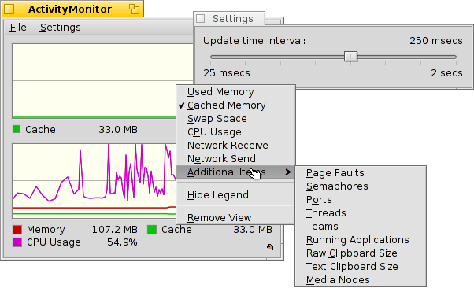

ActivityMonitor
ActivityMonitor
| Deskbar: | ||
| Location: | /boot/system/apps/ActivityMonitor | |
| Settings: | ~/config/settings/ActivityMonitor settings |
You can track system resources by launching the ActivityMonitor and activating different items of interest.
By right-clicking into the window, you can toggle the display of all kinds of resources:
Used/Cached Memory, Swap Space, CPU Usage, Network Receive/Send, Page faults, Semaphores, Ports, Threads, Teams, Running Applications, Raw/Text Clipboard Size, Media Nodes.
Below the graphics is a legend (hideable from the context menu). You can change their colors and that of the graph's background via drag&drop from any color picker, e.g. from Icon-O-Matic.
You can add more views from the menu if it gets too crowded.
The menu opens a panel where you can set the update interval.
Each view has it's own Replicator handle and can thus be arranged, for example, on the Desktop.